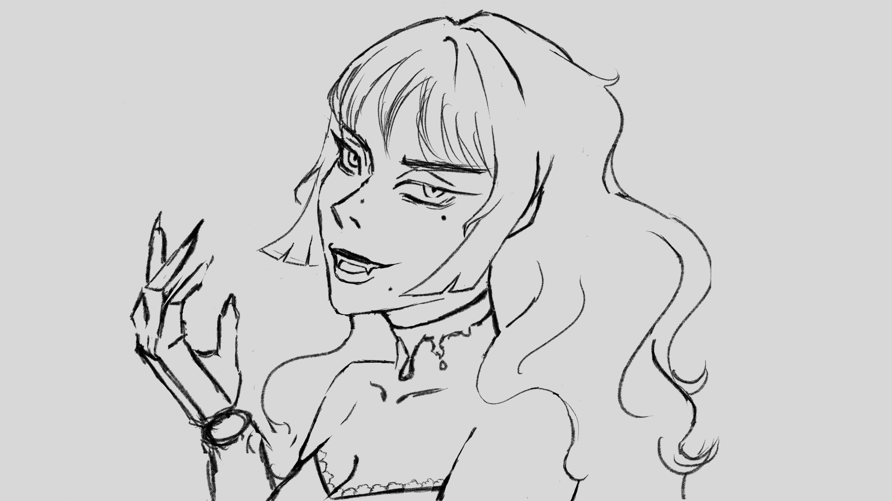
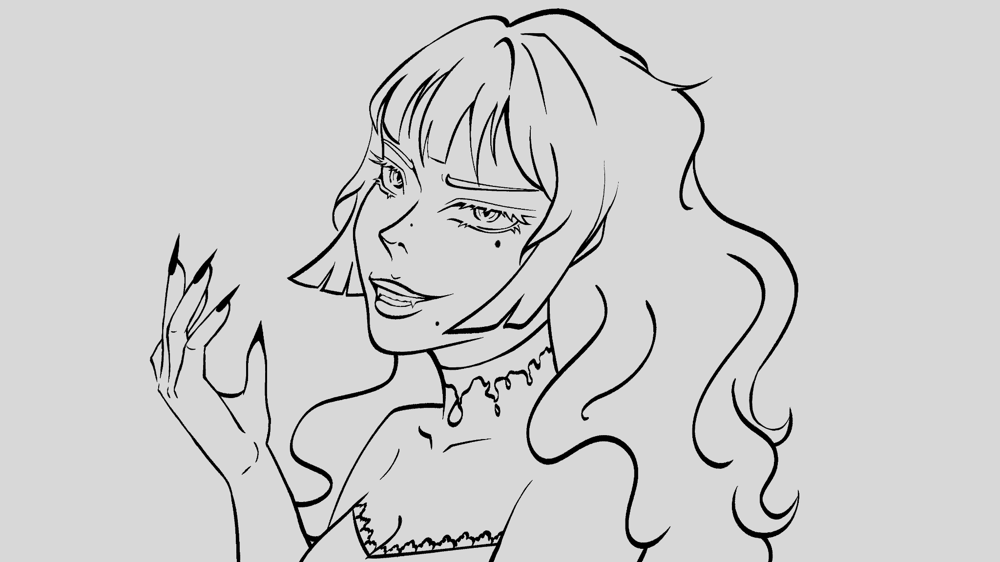
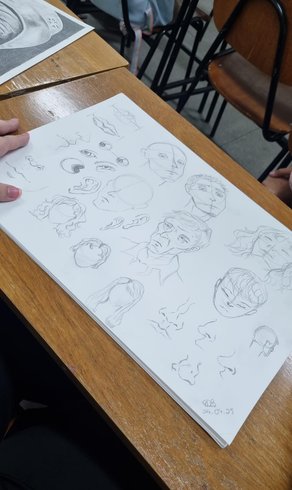
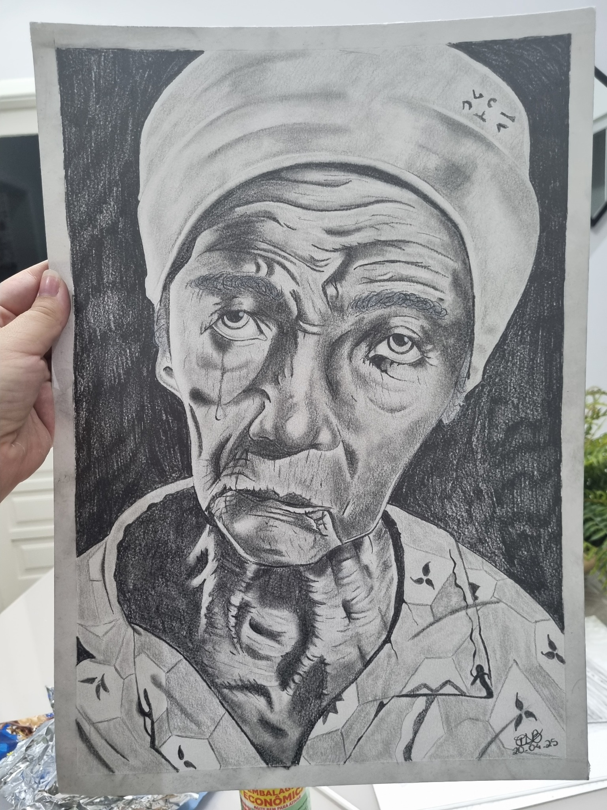
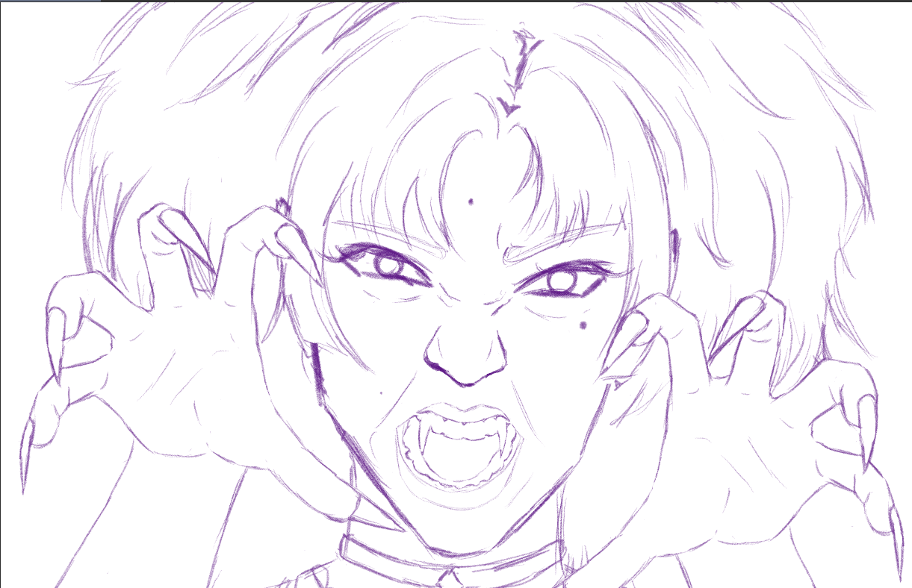
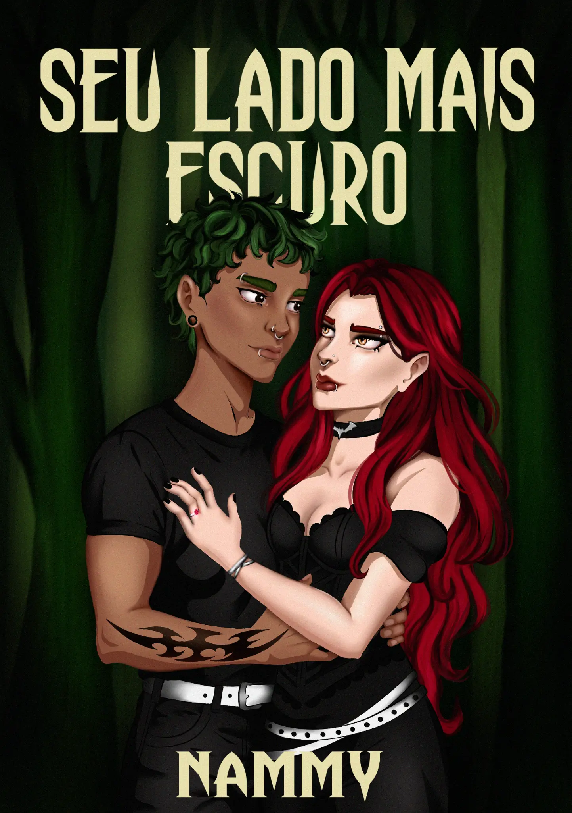
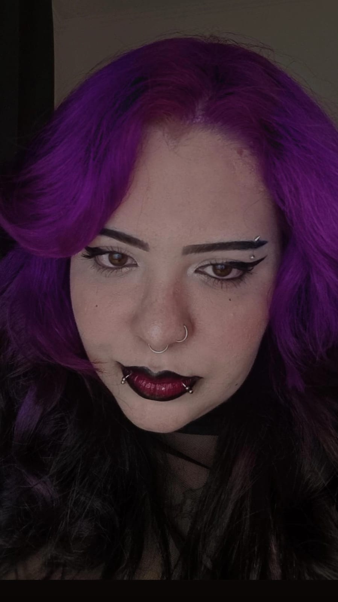

Processo em movimento · Dia 10
Jojo × Anya
Do esboço à construção final: um speed drawing que registra escolhas de forma, expressão e adaptação entre duas linguagens visuais.
01:19 · desenho digital · ediçãoIlustração · escrita · desejo
Uma galeria íntima de personagens, sombras e histórias que não permanecem quietas por dentro.
Entrar na galeria ↘
Obras selecionadas
Por trás da imagem





Estudos tradicionaisO papel como lugar de observação: rostos, expressões e pequenos gestos antes de chegarem ao digital.

“Antes da beleza, existe o impulso. Antes da cor, o corpo já sabe o que quer dizer.”
Desafio de desenho · 12 dias
Uma série de estudos para exercitar anatomia, poses, expressões e adaptação de estilos. Cada prancha registra a observação da referência e as decisões tomadas no traço — do desenho estrutural à personalidade.
Processo em movimento · Dia 10
Do esboço à construção final: um speed drawing que registra escolhas de forma, expressão e adaptação entre duas linguagens visuais.
01:19 · desenho digital · ediçãoRoteiro · narração · edição
Vídeos autorais sobre Hollow Knight: Silksong, concebidos a partir do gameplay e transformados por roteiro, voz e montagem. Uma amostra de como observo, organizo e comunico uma experiência.

Escrita autoral · fantasia sombria · bilíngue
Entre sombras vivas e uma floresta que respira memórias, Nyx desperta em um mundo que reflete tudo o que ela teme — e tudo o que ela ama. Separada de Alma, ela precisa atravessar um território criado a partir de suas próprias dores, traumas e desejos mais profundos.
A floresta era densa.
O cheiro de terra molhada se espalhava pelo ar. Os únicos sons presentes eram minha respiração ofegante, o vento batendo nas árvores e as gotas de chuva colidindo com o solo. Cada passo parecia mais pesado que o anterior, carregado com a força das promessas que fiz a ela, dos sentimentos que confessei a cada dia, das nossas memórias, da sensação da pele dela sobre a minha, da necessidade de protegê-la e também do desespero de não ter sido capaz de mostrar tudo o que gostaria.
Eu sabia que havia algo além da névoa.
E não importava o que surgisse à minha frente: eu chegaria até ela. Veria aquele sorriso lindo novamente, voltaria a tocá-la e nunca mais a deixaria partir.
Um passo em falso me levou ao chão, e os galhos e as pedras cortaram meus joelhos e minhas mãos. Levei algum tempo para processar tudo, como se aquela queda representasse minha própria alma desmoronando.
Então, já não sabia se as gotas de água vinham da chuva ou dos meus olhos.
Eu a vi diante de mim: a expressão de dor, o sorriso fraco enquanto me dizia que não era boa para mim, a resignação com que aceitava a maldição lançada sobre ela — a mesma que a fez desaparecer diante dos meus olhos, levada por aquela coisa. Quando tentei alcançá-la, fui transportada para aquele lugar estranho e escuro. Um lugar que, eu sabia, me daria as respostas de que precisava.
Mesmo quando as coisas estavam difíceis para ela, mesmo quando aquela magia a estava tirando de mim, ainda assim acreditava que sua ausência me faria bem. Como ela podia pensar que o espaço que ocupava em meu coração era tão pequeno, se absolutamente tudo dentro dele pertencia a ela?
— Porra! — xinguei, socando o chão em frustração.
A dor em meu peito era insuportável, como se houvesse um buraco dentro de mim no lugar que ela ocupava. Levei a mão até o coração, apertando a região como se aquilo pudesse aliviar a dor. Mas eu sabia que não podia fazer nada. Sabia que não havia salvação para mim.
Foi então que uma risada maléfica ecoou pela floresta, trazendo-me de volta à realidade. Eu não estava sozinha, mas aquela coisa certamente não estava ali para me ajudar.
As sombras se agitaram.
No início, era apenas a névoa movendo-se entre as árvores — uma ondulação na escuridão —, mas então… tornou-se algo completamente diferente.
Uma silhueta.
Uma mulher.
Alta, com cabelos que pareciam tinta flutuando na água e olhos que continham apenas a ausência de luz. Sua pele era branca como os ossos que sustentam o corpo de qualquer ser e, embora seu rosto não me fosse familiar, sua voz era dolorosamente íntima.
— Nyx — ela chamou.
Seu tom era um sussurro estranhamente gentil, como uma antiga cantiga de ninar da qual só conseguimos nos lembrar em fragmentos.
Eu congelei. Cada músculo do meu corpo ficou tenso, e as batidas do meu coração explodiram em meus ouvidos.
— Quem… — Minha voz falhou, rouca pelo choro e pelo frio. — Quem é você?
Ela se aproximou. Seus passos não faziam som algum enquanto caminhava pela floresta.
— Eu sou aquilo que você carrega — disse, inclinando a cabeça como se sentisse pena de mim. — Sempre estive aqui. Você apenas se recusou a me ver.
Levantei-me lentamente, ignorando a ardência das mãos feridas enquanto tentava recuperar o equilíbrio.
— Eu não tenho medo de você — declarei com firmeza.
Um sorriso brotou em seus lábios escuros.
— Não tem? Pois deveria. Afinal… conheço cada dúvida que você já sussurrou para si mesma no escuro.
A névoa ao nosso redor engrossou e, antes que eu pudesse reagir, imagens surgiram no ar: memórias de Alma rindo, dormindo perto de mim e se afastando com os olhos cheios de culpa. Vi a mim mesma, noite após noite, relembrando todas as vezes em que ela me pediu desculpas, todas as vezes em que permaneceu em silêncio.
— Você pensa que está salvando-a — murmurou a mulher enquanto me rodeava. — Mas me diga, Nyx… ela sequer pediu por isso?
Engoli em seco, sentindo minha pulsação disparar.
— Ela me ama — sibilei, embora minha voz tenha vacilado.
— Ama? — A voz da mulher era como o mais doce dos venenos. — Ou você projetou nela seus próprios sentimentos e expectativas? Alguém que nunca a machucaria, que nunca partiria… Mas ela partiu, não partiu? Deixou você sozinha neste lugar amaldiçoado. Disse que não era boa para você. Disse que arruinaria tudo. E talvez… — ela se inclinou em minha direção, deixando que sua respiração gelada tocasse meu ouvido — talvez ela já tenha arruinado.
As imagens mudaram. O rosto de Alma apareceu diante de mim, os olhos cheios de lágrimas e os lábios tremendo ao pronunciar aquilo que eu nunca quis ouvir.
É melhor assim. Eu não sou boa para você.
Senti o peso de tudo me atingir novamente.
— Eu vim por ela — respondi, com a voz falhando.
— E quem virá por você? — sussurrou a mulher.
Cerrei os punhos; minhas unhas cortaram a pele sob a pressão. As lágrimas borraram minha visão, mas não desviei o olhar.
— Eu não preciso que ninguém venha por mim — arranquei de dentro de mim as palavras. — Porque eu irei até ela. Mesmo que cada passo me quebre.
A mulher sorriu — um movimento lento e arrepiante.
— Então você é realmente estúpida. Siga seu caminho, criança. Se quiser sair daqui, logo enfrentará coisas piores do que eu.
E, assim, ela desapareceu, dissolvendo-se na névoa e deixando para trás apenas o eco de suas palavras e a dor em meu peito.
Eu estava sozinha outra vez. A floresta permanecia imutável, embora agora parecesse mais pesada, como se o peso de tudo o que fui forçada a enfrentar penetrasse profundamente em minha alma.
Mas meus pés se moveram mesmo assim.
Um passo.
E então outro.
Através da névoa.
Até ela.
Porque não importava de quais partes de Alma o mundo tentasse me fazer duvidar: eu a encontraria e a amaria por inteiro — sua luz e sua sombra.
Mesmo que isso significasse atravessar o inferno.

SELF / PORTRAITEu sou Nammy
Artista lésbica e escritora interessada nas tensões entre intimidade, desejo, identidade e estranheza. Minha produção transita entre a ilustração digital, o desenho e a escrita autoral, explorando o espaço entre o delicado e o inquietante.
Este portfólio está em construção — como toda identidade viva deve estar.